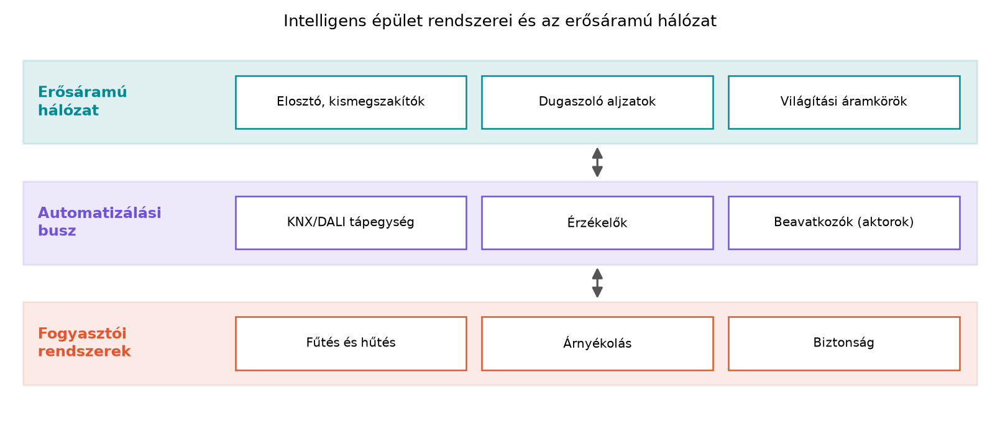

Egy felújított családi házban a tulajdonos csak egy dolgot szeretne: minden funkciót egyetlen felületről – vagy akár automatikusan – vezérelni. Reggel a redőny felmegy, a fűtés a nappali hőmérsékletet hozza, a biztonsági rendszer kikapcsol, este pedig a mozgásérzékelő csak a szükséges helyen kapcsolja a villanyt. Villanyszerelőként nem elég tudni, hogyan kell bekötni egy kapcsolót vagy egy mágneskapcsolót – azt is érteni kell, hogyan épül fel egy buszrendszer, hogyan választjuk el az erősáramú és az automatizálási kábelezést, és hogyan bizonyítjuk az üzembe helyezés során, hogy minden úgy működik, ahogy a megrendelő kérte. Ez az alfejezet a KNX, DALI és más épületautomatikai rendszerek alfejezetre épít, és abból a szempontból tárgyalja az intelligens épületet, hogy a szerelő milyen tervet készít, milyen lépésekkel helyezi üzembe, és hogyan számolja ki, mekkora energia-megtakarítást ér el a rendszer.
Az intelligens épület nem egyetlen termék, hanem több, egymással kommunikáló alrendszer összessége:
Ezek a rendszerek jellemzően közös buszon kommunikálnak. A KNX, DALI és más épületautomatikai rendszerek alfejezetben megismertük a KNX, DALI és más buszok alapjait. Itt a tervezési és üzembe helyezési kérdésekre koncentrálunk.

A fenti ábra azt mutatja, hogy a buszrendszer nem helyettesíti az erősáramú hálózatot, hanem fölé épül: a 230 V-os hálózat biztosítja a fogyasztók tápfeszültségét, a busz pedig a vezérlési üzeneteket szállítja. A szerelő feladata a két világ tudatos szétválasztása.
Szabály. A tervezés első lépése a funkciólista és a felhasználói elvárások rögzítése, majd az érzékelők és beavatkozók kiválasztása, végül a kábelezési útvonalak és az elosztó kialakítása.
Egy tipikus lakás vázlata:
A tervben minden elemet referenciajelöléssel látunk el (például
B1 fényérzékelő, K1 (vagy A1)
világítási kapcsolóaktor, M1 redőnymotor), és a
buszkábelezést külön színnel, vagy külön vonaltípusban jelöljük. A
következő lépés a busz és az erősáramú hálózat kábelezésének
megtervezése.
Definíció. Az erősáramú hálózat a 230/400 V-os hálózati feszültségű vezetékeket jelenti, míg a buszrendszer – tipikusan SELV/PELV törpefeszültség, például KNX esetén 29 V DC, DALI esetén nem leválasztott, de a gyártói előírás szerint szerelendő – a vezérlési jeleket szállítja. Elválasztásnak nevezzük azokat a szerelési intézkedéseket, amelyek megakadályozzák, hogy a két hálózat feszültségszintjei, tranziens zavarai vagy hibái egymásra hassanak.
Szabvány. A kisfeszültségű villamos berendezések szerelési előírásai (MSZ HD 60364‑5‑52) és a gyártói adatlapok rögzítik a kábeltípusokat és a minimális távolságokat. Mindig az aktuális szabványkiadás és a gyártói utasítás az irányadó; az itt megadott értékek szemléltető példák (ellenőrizendő).
Szabály. A gyakorlatban a következő elválasztási módokat alkalmazzuk:
Indoklás. A zavaró forrás a hálózati kábelben folyó váltakozó áram mágneses tere, valamint a kapcsolási tranziensek és túlfeszültségek. Ha a buszvezeték ezek közelében fut, a kommunikáció megszakadhat, a DALI jelek hibásan értelmeződnek, vagy a rendszer összeomlik. A szétválasztás nemcsak a zavarvédelmet, hanem a szerelési biztonságot is szolgálja: hiba esetén a 230 V ne juthasson át a törpefeszültségű (SELV/PELV) buszkörre.
Az üzembe helyezésnél a korábban tanult öt biztonsági szabályt alkalmazzuk, még akkor is, ha a buszrendszer törpefeszültségű – az erősáramú hálózattal közös elosztóban a hálózat lekapcsolása nélkül nem dolgozunk.
Biztonsági korlát. A feladat tanműhelyi (törpefeszültségű) környezetre vagy jogosult oktató felügyeletére vonatkozik; hálózati feszültségen önállóan ne végezd.
Cél: a rendszer minden funkciójának ellenőrzése, a hibák dokumentálása és a biztonságos átadás.
Eszközök: feszültségvizsgáló, multiméter, szigetelési ellenállásmérő, buszdiagnosztikai eszköz (pl. KNX/DALI interfész), gyártói szoftver, laptop.
A gyakorlat során a hálózatot csak akkor kapcsolhatod vissza, ha a munkát befejezted, a földelést/rövidzárat és a lefedéseket eltávolítottad, a burkolatok a helyükön vannak, és mindenki tud a visszakapcsolásról.
Az intelligens épület egyik fő érve az energiamegtakarítás. A leggyakoribb számítás a világítási és fűtési energia csökkentése.
Összefüggés. Az éves energiafogyasztás a névleges teljesítmény és az üzemórák szorzata:
Ha az automatizálás csökkenti a tényleges használati időt vagy a leadott teljesítményt (dimmelés, hőmérséklet-csökkentés távollétkor), akkor a megtakarított energia:
ahol a megtakarítási arány (pl. 0,30 = 30 %). A pénzben kifejezett éves megtakarítás:
ahol az elektromos energia ára Ft/kWh-ban. Az egyszerű megtérülési idő pedig:
ahol a beruházás teljes költsége.
Példa. Egy lakás világítási rendszere összesen névleges teljesítményű. A régi kapcsolás napi 5 órán át égette a lámpákat, évente 365 napon keresztül:
Jelenlét-érzékelők és DALI-dimmelés hatására a tényleges használat 30%-kal csökken (a lámpák csak akkor égnek, ha valaki a helyiségben van, és fényerő-szabályozással a fényforrás kisebb teljesítményt vesz fel). A megtakarítás:
Ha az áram ára (ellenőrizendő: aktuális tarifa), az éves pénzbeli megtakarítás:
Ha a világítás-automatizálás beruházása (érzékelők, aktuátorok, programozás, kábelezés) (ellenőrizendő: piaci árak), a megtérülési idő:
Ez elfogadható lehet, de a valódi megtérülés a használati szokásoktól és az energiaáraktól függ. Fűtésnél a megtakarítás nagyságrenddel nagyobb lehet, de ott a fűtési rendszer típusát (hőszivattyú, gáz) és a hőszükségletet is számításba kell venni.
Egy irodaház felújítása során a villanyszerelő a KNX buszt és az erősáramú kábeleket – takarékosságból – közös kábeltálcára fektette, a buszvezetéket nem a KNX-előírás szerinti, árnyékolt buszkábellel vezette, és a párhuzamos szakaszok hossza több méter volt. Az üzembe helyezéskor a KNX-nyomógombok parancsai szakaszosan elvesztek, az ETS-buszmonitor ismételt táviratokat mutatott. A mérési hibakeresés során a buszfeszültség a tápegységnél névleges volt, de a hibás szakaszon jelentős, 50 Hz-es zavar volt megfigyelhető. A megoldás az volt, hogy a buszkábelt külön, fémtálcán vezették (az árnyékolást és a kísérőeret a KNX-irányelv szerint nem kötötték be), és a keresztezéseket derékszögben alakították ki (ellenőrizendő: KNX telepítési irányelv). A zavar megszűnt, a KNX-kommunikáció stabil lett. Ez az eset jól mutatja, hogy az elválasztási szabályok nem papírmunkák, hanem a rendszer működőképességét garantálják.
1. feladat (A). Sorold fel az intelligens épület négy fő rendszerét, és adj meg mindegyikhez egy-egy tipikus érzékelőt és beavatkozót.
2. feladat (A). Nevezz meg három módot az erősáramú és a buszkábelezés elválasztására.
3. feladat (B). Egy irodai folyosó 240 W-os világítását jelenlét-érzékelő naponta átlagosan 2 órával rövidebb ideig működteti (250 munkanap/év). Mennyi az éves energia-megtakarítás? Adj választ Wh-ban és kWh-ban.
4. feladat (B). Egy lakás világítási fogyasztása 800 kWh/év. A DALI + jelenlét-érzékelő rendszer után 560 kWh/év. a) Számítsd ki a megtakarítás százalékát. b) Mennyi az éves pénzbeli megtakarítás, ha az áram ára 70 Ft/kWh? (ellenőrizendő)
5. feladat (C). Egy KNX-rendszerben a busztáp 29 V DC-t ad, de a hálózati feszültségű vezetékekkel egy vályúban vezetett buszkábelen a szoftver szakaszos buszhibát jelez. Milyen hibalehetőségeket és milyen méréseket végzel? (Tételezzük fel, hogy a telepítés előtt az elválasztási szabályt nem tartották be.)
6. feladat (D). Tervezz meg egy kis lakás automatizálási vázlatát (szövegesen vagy ábrával): világítás, árnyékolás, fűtés, biztonság. Sorold fel a szükséges érzékelőket és beavatkozókat, és jelöld, hol választod el az erősáramú és a buszkábelezést. Ez a tervezési feladat előkészíti a záró részek komplex feladatait.
Külön csatorna vagy védőcső, tartótávolság tartása (pl. 50–100 mm), árnyékolt buszkábel alkalmazása, keresztezések derékszögben.
A napi megtakarított idő: . A megtakarított energia naponta:
Éves szinten:
(Ez a számítás az energiaárat adottnak veszi; a tényleges tarifát ellenőrizni kell.)
A hiba jellege szakaszos buszhiba, ami zavarérzékenységre utal. A lehetséges okok:
Mérések:
Javítás: a buszkábelt külön, lehetőleg fém védőcsőben vagy árnyékolt kivitelben vezetni, a távolságot növelni, a keresztezéseket derékszögben kialakítani, az árnyékolást és a kísérőeret a KNX telepítési irányelv szerint nem kötjük be (ellenőrizendő: KNX Association / gyártói útmutató). Ezután ismételt teszt.
Például egy kétszobás lakás terve:
A kábelezési terven az erősáramú kábelek vastag, a buszkábelek vékony vonallal szerepelnek, a keresztezések derékszögben, a tartótávolságokkal. Az elosztóban a busztáp törpefeszültségű részét elkülönítve, a hálózati sorkapcsoktól távol helyezzük el.
Az intelligens épület tervezésekor a szerelő a világítás, árnyékolás, fűtés, biztonság és egyéb rendszerek igényeit gyűjti össze, majd buszrendszerrel (KNX, DALI) köti össze az érzékelőket és beavatkozókat. A legfontosabb szerelési szabály az erősáramú hálózat és a buszkábelezés elválasztása: külön csatorna, tartótávolság, árnyékolt kábel, derékszögű keresztezés. Az üzembe helyezés az öt biztonsági szabály után szemrevételezéssel, szigetelési ellenállásméréssel, busztáp-ellenőrzéssel, címzéssel, paraméterezéssel, funkcióteszttel és dokumentációval zárul. Az energiamegtakarítás a névleges teljesítmény, az üzemidő és a csökkentési arány szorzatából számítható, a megtérülési idő a beruházás és az éves megtakarítás hányadosa. Minden konkrét paramétert (feszültségek, távolságok, energiaárak) az aktuális szabvány és gyártói adatlap alapján kell ellenőrizni. Az itt tárgyalt tervezési és üzembe helyezési módszert a könyv záró, gyakorlati vizsgafelkészülési részei tovább mélyítik.
A fejezethez kapcsolódó szabványok és gyártói dokumentációk a következők (ellenőrizendő): MSZ HD 60364-5-52 – kábelek és vezetékek szerelése; MSZ EN 60669, MSZ EN 61439; a KNX és DALI szövetségek aktuális szerelési és tanúsítási útmutatói. A számításokban használt energiaárat és beruházási költségeket a helyi viszonyok és az aktuális tarifák szerint ellenőrizni kell. A megadott buszfeszültség-értékek (KNX 29–31 V DC, DALI 16 V tipikus) gyártófüggőek, ezért a konkrét eszközök adatlapját kell mindig használni.